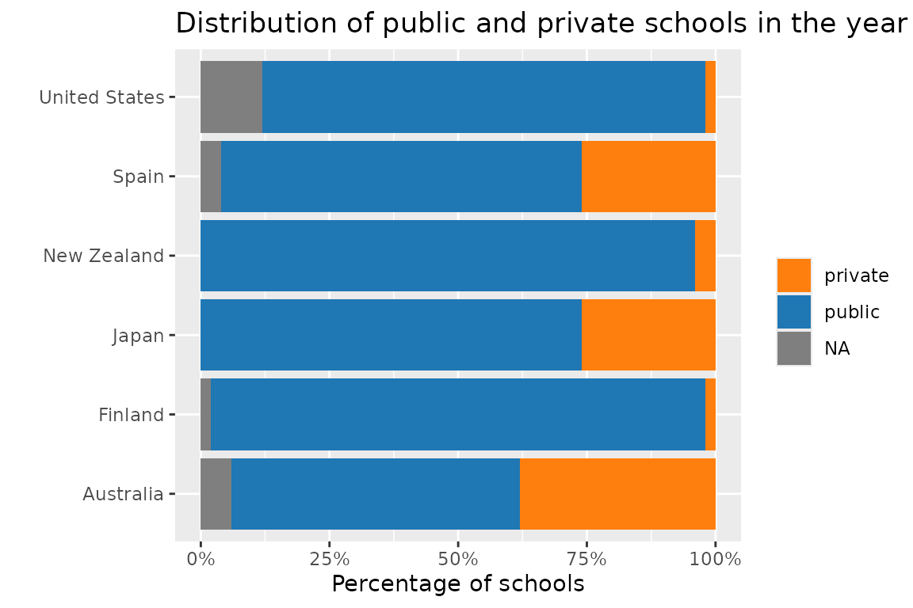
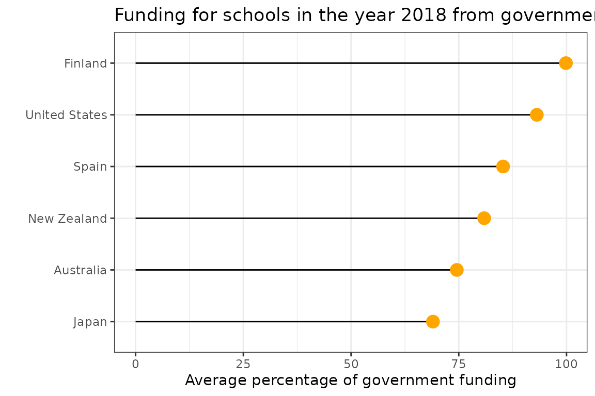

vignettes/learningtower_school.Rmd
learningtower_school.RmdThe goal of learningtower is to provide a user-friendly access to a subset of variables from the Programme for International Student Assessment (PISA) data collected by the OECD. The data is collected on a three year basis, between the years 2000-2018.
You can explore more on this dataset for various analysis and statistical computations.
This vignette documents how to access these dataset, and shows a few ways of integrating the data.
The size of the full student is too big to fit inside the package. Hence, in our package, we provide a random subset of the student data, stored as student_subset_20xx data objects (where xx denotes the specific year of the study). These subset data can be used to understanding the data structure before using the full dataset which is available for download.
In the student_subset_2018 and school data, there are three common columns, school_id, country and year. It should be noted that school_id is only meaningful within a country within a specific year; meaning that when we join the two data, we need to use the keys c("school_id", "country", "year").
library(tidyverse)
library(learningtower)
#loading the student subset data
data(student_subset_2018)
#loading the school data
data(school)
#loading the country data
data(countrycode)
#joining the student, school dataset
school_student_subset_2018 <- left_join(
student_subset_2018,
school,
by = c("school_id", "country", "year"))
#check the count of public and private schools in the a few randomly selected countries
school_student_subset_2018 %>%
dplyr::filter(country %in% c("AUS", "QAT", "USA" , "JPN",
"ALB", "PER", "FIN", "SGP")) %>%
group_by(country, public_private) %>%
tally() %>%
dplyr::mutate(percent = n/sum(n)) %>%
dplyr::ungroup() %>%
left_join(countrycode, by = "country") %>%
dplyr::mutate(country_name = fct_relevel(
country_name,
c("Finland", "United States", "Albania", "Peru", "Japan", "Qatar", "Australia"))) %>%
ggplot(aes(x = percent,
y = country_name,
fill = public_private)) +
geom_col(position = position_stack()) +
scale_x_continuous(labels = scales::percent) +
scale_fill_manual(values = c("#FF7F0EFF", "#1F77B4FF")) +
labs(title = "Distribution of public and private schools in the year 2018",
y = "",
x = "Percentage of schools",
fill = "")
The graph assists us in understanding the distribution of public and private schools in few countries based on the datasets. Taking a closer look at the above plot, we can infer that most countries have more public schools than private schools. Interestingly, Australia had a nearly equal mix of public and private schools in the year 2018. This public/private information is missing in Signapore.
Similarly, we may derive additional intriguing patterns and analysis by considering the other variables in the school dataset.

The above figure shows the average percentage of overall financing in various schools for a random sample of countries. We conclude that countries such as Finland and the United States received the most funding from their governments, whilst Qatar received the least funding.
In addition, to perform a detail analysis on the school and entire student data it can be downloaded for the desired years using the load_student function available in this package.
Similarly, you may import student data for any chosen year and experiment with PISA scores growth or additional analysis of these datasets with their other elements that assist contributor comprehend the data. Refer to our articles here for additional interesting analyses and plots.